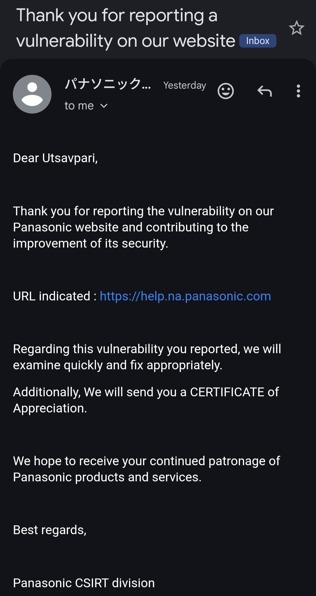
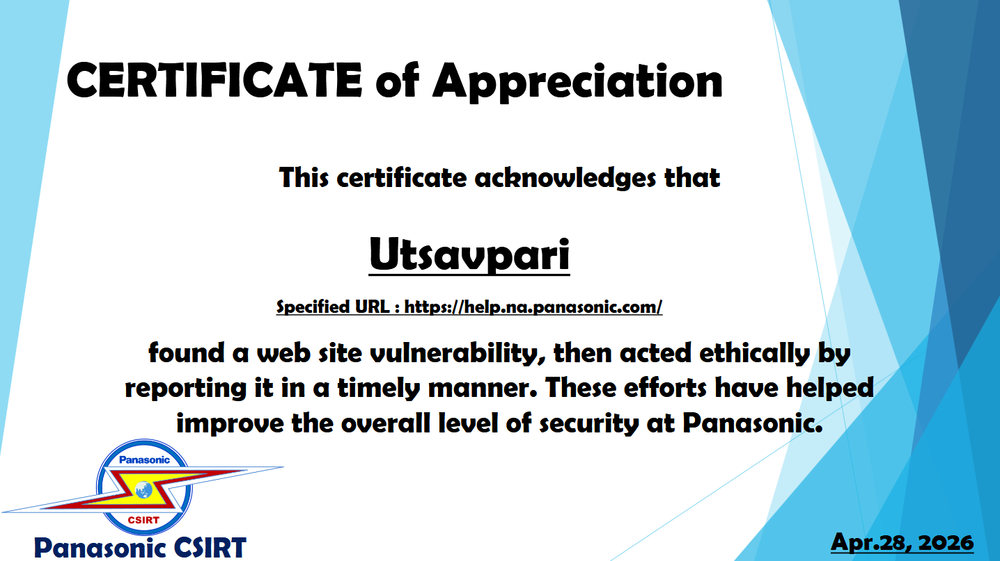

Hello Hackers 👨💻🔐
I hope you are all doing well and continuing to secure our digital landscape 🌍🛡️
Today, I want to share how I reported a security vulnerability to Panasonic 🇯🇵 and they acknowledged my report with a Certificate of Appreciation 🏆📜
That was a great experience and another reminder that responsible disclosure always matters 🤝💙
🚀 The Hunting Journey
During my security testing and reconnaissance process, I was looking for exposed files, backend leaks, and possible misconfigurations.
As many researchers know, these types of vulnerabilities are often discovered through proper fuzzing using the right wordlists and careful endpoint analysis 🔍
I performed enumeration, checked various accessible paths, and analyzed server behavior to identify hidden files and sensitive resources.
After multiple tests, I discovered an issue related to sensitive files leaking backend information ⚠️
🧪 The Discovery
I cannot fully disclose the exact bug right now because the issue is still in the process of being fixed 🔧
However, I can give a small hint 👀
The vulnerability involved exposed sensitive files that were revealing important backend-related information and internal details that should not have been publicly accessible 📂💥
Such information disclosure can create serious risks because attackers may use these details for deeper exploitation and attack chaining.
After validating the issue properly, I knew it was important to report it responsibly 📩
📩 Reporting to Panasonic
I submitted the report through Panasonic’s official PSIRT (Product Security Incident Response Team) page:
🔗 https://holdings.panasonic/global/corporate/product-security/psirt/policy.html
Panasonic responded immediately and professionally 🙌
Their security team handled the report seriously and followed a responsible disclosure process with great professionalism.

After reviewing the report, Panasonic acknowledged my contribution and also sent me a Certificate of Appreciation 🎖️

- ✅ Vulnerability reported successfully
- 🏆 Certificate of Appreciation received
- 🤝 Responsible disclosure completed professionally
This was a great experience and showed how seriously Panasonic values security and ethical hackers 🔥
❤️ Gratitude
I would like to thank my best friend K3$#!V@ ❤️ for constant support and motivation, my family 👨👩👦, and the biggest hacker of this multiverse Shiva 🕉️❤️
With divine blessings and the power of Pinak Dhanush 🏹, I was able to hit the target perfectly 🎯
💡 Final Thoughts
This journey taught me something important:
- 🔍 Small discoveries can create big security impact
- ⚔️ Persistence always leads to valuable findings
- 🛡️ Responsible disclosure builds trust
- 🏆 Great companies respect ethical hackers
If you have any questions or queries, feel free to contact me through my Linktree and social media profiles 📱🌐
Thank You,
MR. X FACTOR
🔗 Handles:
- Linktree: https://linktr.ee/mrxfact0r_99